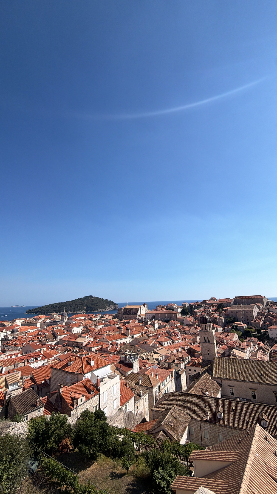

Michael Shah
.
Home
About
Projects
Writing
Photography
Contact
Beyond work / A visual journal
Through my lens.
Travel, food, architecture, and the details worth noticing.

01 / Travel
Dubrovnik, Croatia
02 / Travel
Santorini, Greece
03 / Food
From my kitchen
04 / After dark
Colour and contrast
05 / On the street
Automotive details